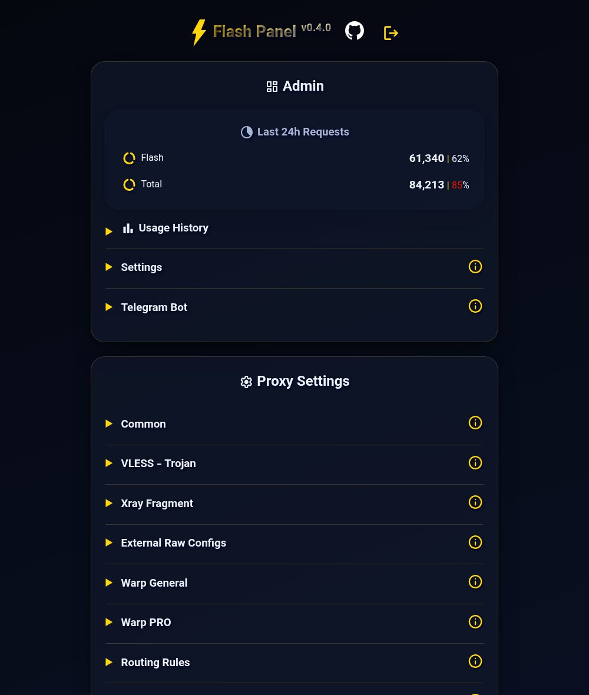
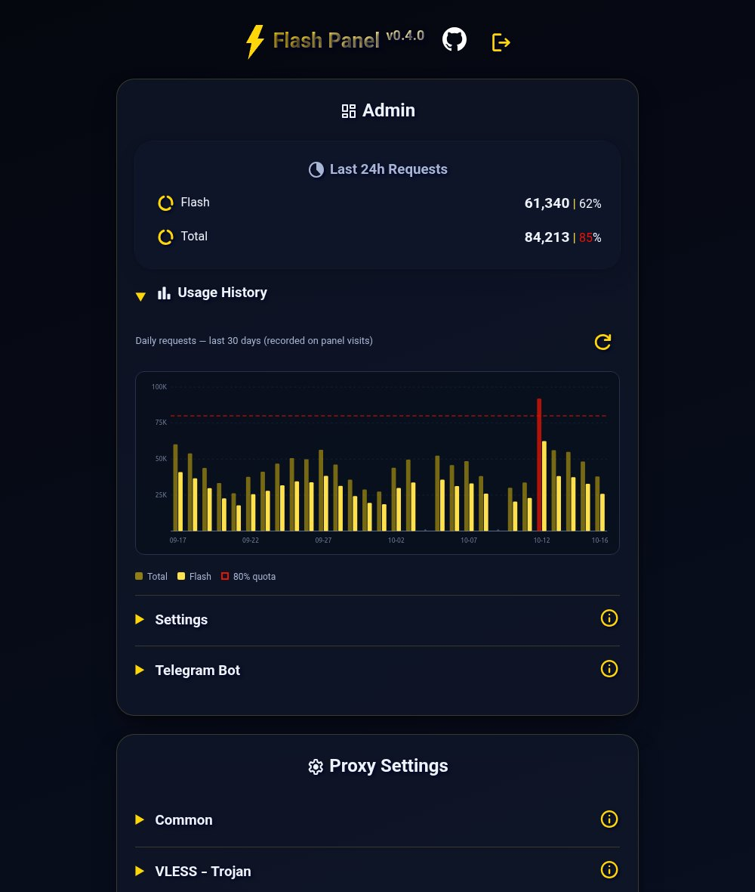
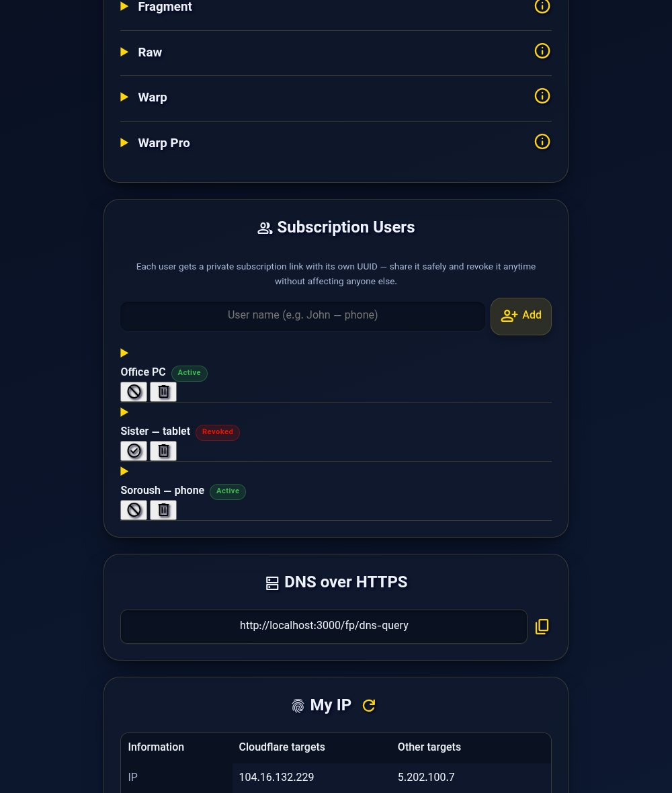

They said you need a VPS. You don't. Meet Flash Panel.
497tests passing
139.4 KBbundle (gzip)
0runtime dependencies
$0forever — free tier
3config cores (Xray/Clash/sing-box)
205live configs verified
Recently engineered
Every release is a live battle-test
0.8.6
0.8.7
0.8.8
0.8.9
0.8.10
205 live configs generated per subscription
17 connect addresses — domain + Clean IPs
3 mirrors byte-identical on every release
E2E-verified with real xray traffic through the panel
723 KB/s measured end-to-end throughput
6/6 field-test layers green — code to live panel
Features
Everything a panel should have. Nothing it shouldn't.
The gap
Same protocol. Different league.
| Criterion | ⚡ Flash Panel | Typical VPS panels |
|---|
Field receipts
Measured against the live panel. Not a demo.
Deployment
Up and running in one minute
Manual — full control
⌨️ With Wrangler CLI
# clone & configure git clone https://github.com/CheginiSoroush/flash-panel.git cd flash-panel cp wrangler.jsonc.example wrangler.jsonc # fill account_id + KV cp deploy/settings.example.js deploy/settings.js # ship it 🚀 npx wrangler deployFull guide in README
Screenshots
A panel that feels like production software



One developer. Zero funding. Zero servers. Every feature above survived real censorship first.